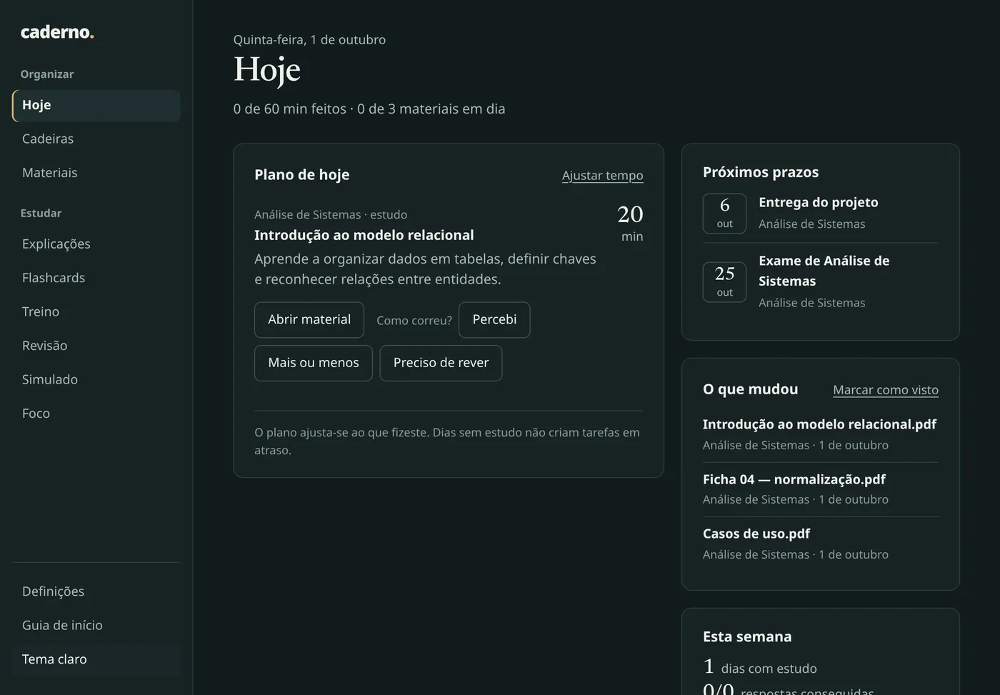
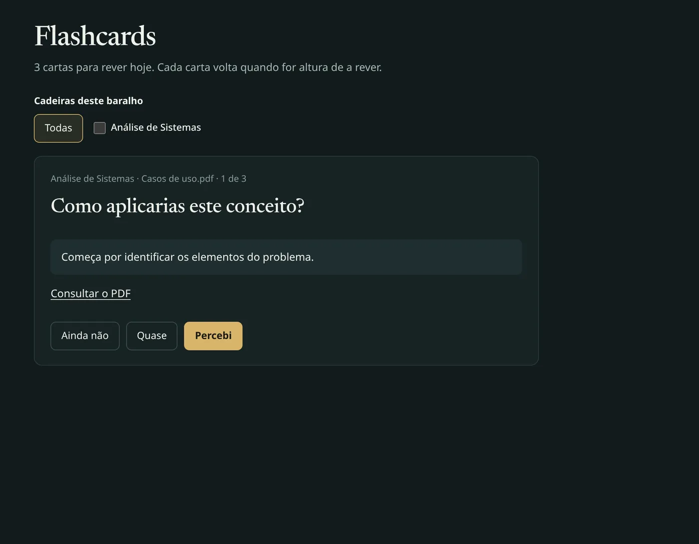
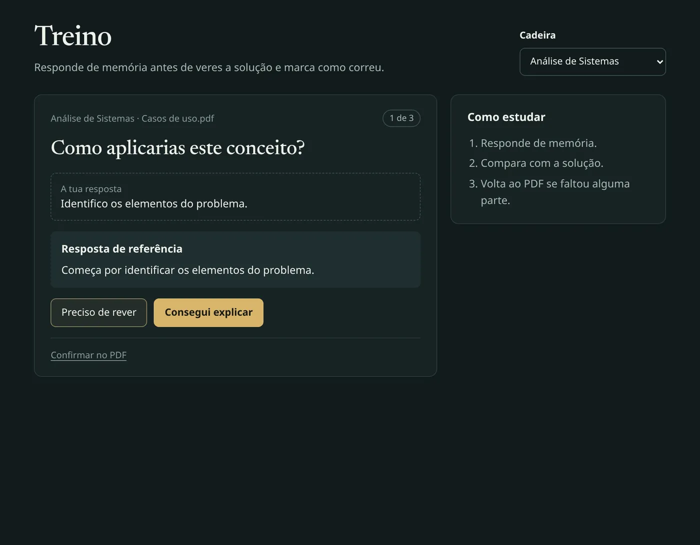

Hoje
Um plano à medida do tempo que tens.
Casos de uso.pdf
Resumo_final_v3.pdf
slides_semana3 (1).pdf
O material está espalhado.
Por onde começo hoje?
Hoje
Um plano à medida do tempo que tens.

Explicações
Explicações que mostram a página de onde vieram.
Um modelo relacional guarda os dados em tabelas. Cada linha é um registo e cada coluna um atributo. p. 2
A chave primária identifica cada linha. Uma chave estrangeira aponta para a chave primária de outra tabela. p. 4
É assim que as tabelas se ligam sem repetir dados.
As marcas «p.» abrem o PDF na página de onde veio cada parte.
Para estudar
Flashcards, treino e simulados a partir dos teus PDFs.


Grátis · Código aberto · Para Windows
github.com/miguelaopt/caderno
Feito por Miguel Ferreira, estudante